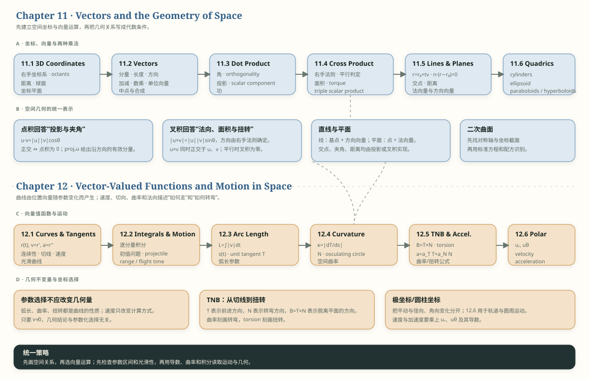

第11章：建立空间语言
从三维坐标、向量和标准基开始，用点积处理投影与角度，用叉积处理法向、面积、扭矩和体积。
第 11 章用点积与叉积把空间中的长度、夹角、面积、平面和体积转成向量运算；第 12 章把曲线看成随时间移动的位置向量，用弧长、曲率、法向与扭转读出运动结构。两章共同强调：坐标只是表示，几何量和运动结论必须经得起参数变化。
00 · Batch Brief
从三维坐标、向量和标准基开始，用点积处理投影与角度，用叉积处理法向、面积、扭矩和体积。
把曲线视为位置向量，用速度、加速度、弧长、单位切向、曲率和 TNB 标架描述怎样运动、怎样转弯、怎样扭转。
逐项核验右手性、叉积顺序、法向量方向、直线/平面距离、参数不变性、曲率非负与 torsion 符号。
01 · Dependency Map

向量提供方向；点积把夹角和投影写成标量；叉积生成法向、面积和体积；直线平面与二次曲面都是这些运算的几何应用。
位置向量 r 的导数给出运动；弧长与单位切向把几何尺度与时间分离；曲率和 torsion 描述转弯与扭转；TNB 把加速度分解为切向和法向。
02 · English Terminology
重点区分 vector 与 scalar、projection 与 component、normal 与 binormal、curvature 与 torsion，以及 line 的方向向量与 plane 的法向量。
| English term | 中文译名 | 简明定义 | 对应节 | 关键公式 / 提示 |
|---|
| 易混项 | 关键区别 | 核对问题 |
|---|---|---|
| vector / scalar | 向量有大小和方向；标量只有大小。 | 所需答案是一个数还是一个方向对象？ |
| dot product / cross product | 点积得标量；叉积得空间向量。 | 问题要投影/夹角，还是法向/面积/旋转？ |
| projection / scalar component | 前者是向量，后者是带符号长度。 | 最终是否要保留方向？ |
| line direction / plane normal | 方向向量平行于直线；法向量垂直于平面。 | 方程 r=r₀+tv 还是 n·(r−r₀)=0？ |
| position / velocity / speed | 位置是向量，速度是向量，速率是速度大小。 | 问题要“在哪里”“往哪走”还是“多快”？ |
| curvature / torsion | 曲率非负，描述转向；torsion 可正可负，描述离开平面扭转。 | 曲线是在转弯，还是在扭转？ |
| T / N / B | T 前进、N 朝弯曲内侧、B=T×N。 | 单位标架顺序是否正确？ |
| polar unit vectors / fixed i,j | uᵣ、uθ 随 θ 改变；i、j 固定。 | 求导时是否保留了单位向量的变化？ |
New Chapter Summary
用坐标和向量描述空间；用点积读取投影与角度；用叉积描述法向、面积、扭矩和体积；再用这些工具构造直线、平面与二次曲面。
空间点由有序三元组 (x,y,z) 表示，三个坐标平面把它分成八个卦限。距离公式来自两次勾股定理；球面由到中心的固定距离定义，配方可读取球心和半径。
三个坐标差分别平方后再相加。
右端必须为正才是实球面；完成平方后读取中心。
向量由长度和方向决定，可平移到标准位置；分量由终点减起点得到。向量的加减与数乘逐分量进行，单位向量只保留方向。物理中的力、速度和位移要用向量合成。
长度非负；零向量是唯一没有方向的向量。
只对非零向量定义；把 v 写成 |v|·(v/|v|) 分成长度与方向。
点积把两个向量压成一个标量，同时保留夹角信息。点积为零判定正交；除以另一向量的长度得到沿该方向的标量分量，再乘单位方向即得向量投影。恒力做功是力与位移的点积。
夹角公式要求两个向量都非零；投影公式要求 v 非零。
D 是位移向量；结果可正、负或零。
叉积只对空间向量直接定义，结果垂直于两个因子，方向由右手法则决定。它的大小等于两向量张成的平行四边形面积；三重标量积的绝对值给出平行六面体体积。叉积顺序反转会使结果变号。
j 分量展开时带负号；与点积不同，叉积不可交换。
三角形面积是平行四边形面积的一半。
三向量共面时体积为零。
方向由右手法则解释旋转轴，大小取决于垂直力臂。
空间直线由一个点和方向向量决定；平面由一个点和法向量决定。两平面交线方向等于法向量叉积。点到直线/平面的距离都用“垂直分量”计算，而不是任取一点的普通距离。
参数化不唯一：换基点或重参数化仍描述同一直线。
n=⟨A,B,C⟩ 是法向量；平面方向与 n 垂直。
用方向向量与位移叉积的垂直分量。
取点 P 在平面上，投影到单位法向量。
柱面的方程通常缺少其中一个变量，表示生成曲线沿该变量方向平移。二次曲面通过平方项符号、一次项和坐标截面分类；配方可识别平移后的椭球、双曲面或抛物面。
先看对称轴与截面，再匹配标准式；有平移项时先配方。
| 名称 | 识别特征 | 典型截面 |
|---|---|---|
| ellipsoid | 三个平方项同号，右端正 | 三个方向均为椭圆 |
| elliptic paraboloid | 两个平方项，一个一次项 | 一次轴方向为抛物线 |
| hyperboloid | 平方项一负或两负 | 一叶或两叶 |
| cone | 平方和等于另一个平方 | 不同高度为相似椭圆 |
| hyperbolic paraboloid | 平方项差等于一次项 | 鞍点，两个方向开口相反 |
| 教材例题 | 结论 | 位置 |
|---|---|---|
| Examples 3–4（11.1） | 距离示例 √45；球面配方中心 (−3/2,0,2)，半径 √21/2。 | 教材p.669–670 / PDFp.670–671 |
| Examples 5–8（11.3） | 角度、正交、投影与恒力做功都归约为点积。 | 教材p.683–687 / PDFp.684–688 |
| Examples 2–6（11.4） | 叉积求法向；三角形面积 3√2；平行六面体体积 23。 | 教材p.691–694 / PDFp.692–695 |
| Examples 5,7,11–12（11.5） | 点到线距离 √5；三点平面 3x+2y+6z=6；点到面距离 17/7；平面夹角约1.38 rad。 | 教材p.698–702 / PDFp.699–703 |
| Example 4（11.6） | 二次曲面配方后识别为椭球，中心(1,−2,0)，半轴2,2,1。 | 教材p.706–707 / PDFp.707–708 |
直线方向平行于线，平面法向量垂直于面。
u×v=−v×u，方向与符号都有意义。
标量分量除以 |v|；向量投影还需乘 v/|v|，合起来是 (u·v/|v|²)v。
必须取位移在法向量上的垂直投影。
本章 cylinder 的生成曲线可为任意平面曲线。
还需检查一次项、常数和截面，必要时配方。
New Chapter Summary
把空间曲线看作位置向量随时间的轨迹；通过速度、加速度、弧长、曲率和 TNB 标架拆分运动的方向、速率与转弯。
向量值函数在每个参数值给出一个空间位置；极限与连续性逐分量判断。位置导数是速度，速度导数是加速度。速度方向为切线，速度大小为速率。
光滑曲线还要求 v(t) 不为零，避免尖点或停驻。
向量积分逐分量进行；已知加速度和初值可两次积分恢复速度与位置。理想抛体只有竖直重力加速度，因此水平速度恒定，竖直运动为二次函数。
结果是常向量；不定积分要加常向量 C。
从水平面原点出发，只有重力，忽略空气阻力。
竖直速度为零时最高；飞行时间取落地时刻；射程公式只适用于同高度平面。
空间弧长把速度大小沿时间积分；弧长函数 s(t) 记录从基点起的定向距离。以弧长为参数时，位置对 s 的导数就是单位切向量 T，这为曲率定义提供自然尺度。
平滑曲线在参数区间内恰好描过一次。
基点只改变 s 的零点；ds/dt 与基点无关。
只在 v≠0 时有定义。
曲率衡量单位切向量随弧长转向的速度，直线的曲率为0，半径a的圆曲率为1/a。主法向量 N 指向弯曲内侧；密切圆同时匹配一点的切线和曲率。
曲率非负；速度不能为零。
在 κ≠0 时，N 垂直于 T 并指向弯曲内侧。
曲率半径 ρ=1/κ；圆心沿 N 方向移动 ρ。
T、N、B 组成随曲线运动的右手单位标架。加速度只在 T、N 张成的平面内：切向分量改变速率，法向分量改变方向并等于 κ|v|²。B 的变化速度由 torsion 判断扭转。
B=T×N；三者均为单位向量且两两正交。
a_N 的非负平方根；不能把 a_N 与加速度大小混淆。
要求 v×a 非零；若为零，曲线局部可能直线或参数退化。
曲率永不为负；torsion 可正、可负、可为零。平面曲线 torsion=0。
极坐标中的单位向量 uᵣ、uθ 随角度转动，所以求导会产生额外角速度项。柱坐标在极坐标平面外加 zk；速度和加速度的每一项都有明确的径向或角向来源。
r-dot 是径向伸缩速率；rθ-dot 是角向线速度。
−rθ-dot² 是向心项；2r-dotθ-dot 是科里奥利项。
z 分量与平面极坐标分开处理；基向量 uᵣ、uθ、k 构成右手标架。
| 教材例题 | 结论 | 位置 |
|---|---|---|
| Examples 1–4（12.1） | 螺旋线 r=(cos t,sin t,t)；速度为切线，加速度是 v 的导数。 | 教材p.717、720 / PDFp.718、721 |
| Example 4（12.2） | 500 m/s、60°、t=10s 时位置约2500i+3840j。 | 教材p.728 / PDFp.729 |
| Examples 1–3（12.3） | 螺旋线一圈长2π√2；s=√2 t；T=v/|v|。 | 教材p.735–737 / PDFp.736–738 |
| Examples 2,4,5（12.4） | 半径a圆曲率1/a；y=x²在原点密切圆半径为1/2；螺旋线曲率a/(a²+b²)。 | 教材p.739–742 / PDFp.740–743 |
| Examples 1–2（12.5） | 加速度拆成a_T T+a_N N；螺旋线的 torsion 恒定。 | 教材p.746–749 / PDFp.747–750 |
| Section 12.6 | 极坐标加速含向心项与 2r-dotθ-dot 项；Kepler 定律描述轨道与面积。 | 教材p.751–753 / PDFp.752–754 |
速度是向量，速率是 |v| 标量。
弧长积分的是速度大小，不是两端直线距离。
κ 是 dT/ds 的长度，永远非负。
B=T×N；改变叉积顺序会翻转右手标架。
一般 a 同时有切向与法向分量，只有匀速时切向分量为零。
uᵣ、uθ 随 θ 改变，必须对它们求导。
05 · Deliberate Practice
题目按章节与知识点映射。先独立作答，再依次展开提示、关键步骤和完整解析；方向、符号、参数与几何解释都要写出。
06 · Recall & Diagnosis
| 练习编号 / 知识点 | 错误类型 | 应回看的内容 |
|---|---|---|
尚未编辑
07 · Quality Gate
| 检查项 | 结果 | 证据 / 说明 | 缺陷等级 |
|---|---|---|---|
| G1 版本与来源 | 通过 | 第11章667–709、第12章716–753与PDF物理页逐节核对。 | 无 |
| G2 章节覆盖 | 通过 | 11.1–11.6、12.1–12.6全部覆盖。 | 无 |
| G3 术语 | 通过 | 73个新增术语，按章节和字母检索。 | 无 |
| G4 定理与公式 | 通过 | 点积、叉积、线面、二次曲面、弧长曲率和TNB公式。 | 无 |
| G5 例题结论 | 通过 | 两章代表例题均有教材页/PDF页锚点。 | 无 |
| G6 练习与答案 | 通过 | 每章15道原创题，五种题型、三级答案。 | 无 |
| G7 计算与渲染 | 通过 | 68项代表性复算通过；33个页面公式无溢出，KaTeX错误为0。 | 无 |
| G8 图表与链接 | 通过 | B6知识图、章节导航、术语和练习检索可用；本地链接完整。 | 无 |
| G9 网页与打印 | 通过 | 桌面、390px移动端无页面级溢出；A4 PDF逐页检查。 | 无 |
| G10 版权与版本 | 通过 | 原创提炼与练习，不复制整节教材或混入其他资料。 | 无 |
08 · Source Ledger
| 节 | 教材页 | PDF物理页 | 内部标题 |
|---|---|---|---|
| 11.1 | 667–671 | 668–672 | 三维坐标、距离与球面 |
| 11.2 | 672–680 | 673–681 | 向量、长度、运算与合成 |
| 11.3 | 681–688 | 682–689 | 点积、投影与功 |
| 11.4 | 689–694 | 690–695 | 叉积、面积、扭矩与体积 |
| 11.5 | 695–704 | 696–705 | 直线、平面、交点与距离 |
| 11.6 | 704–709 | 705–710 | 柱面与二次曲面 |
| 12.1 | 716–724 | 717–725 | 空间曲线、切线与运动 |
| 12.2 | 725–733 | 726–734 | 向量积分与抛体运动 |
| 12.3 | 734–737 | 735–738 | 空间弧长与弧长参数 |
| 12.4 | 738–743 | 739–744 | 曲率、主法向量与密切圆 |
| 12.5 | 744–749 | 745–750 | TNB、加速度分解与 torsion |
| 12.6 | 750–753 | 751–754 | 极坐标/柱坐标运动与 Kepler |